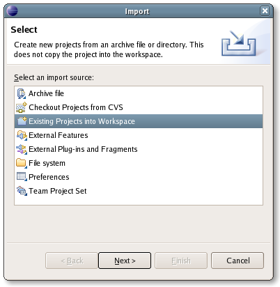
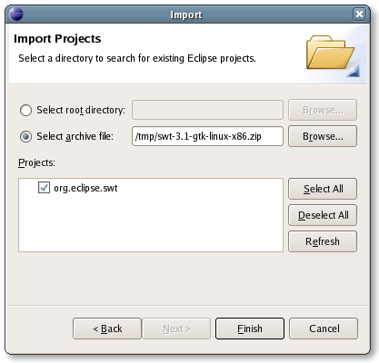
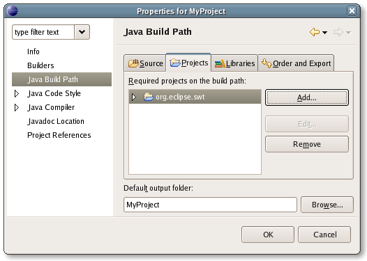
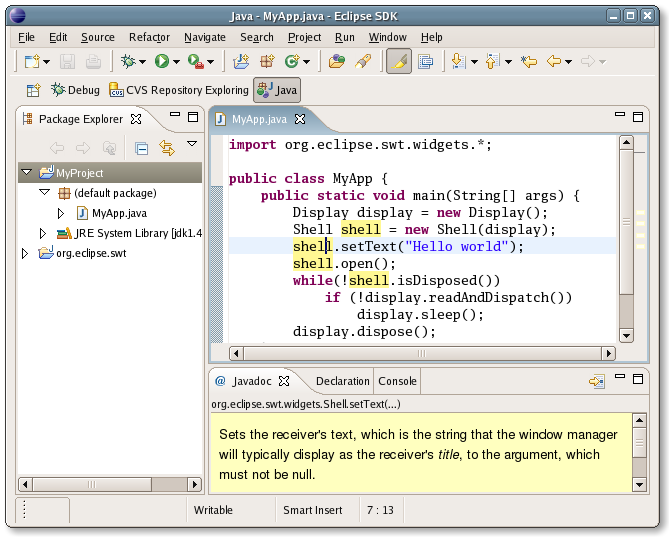

Developing SWT applications using Eclipse
While SWT is integrated as part of the Eclipse plug-in API, for standalone application development it is best to develop against the SWT standalone download. This document will help you get set up.
First, download the .zip of SWT for your platform from the SWT homepage.
The SWT .zip file can then be imported into your workspace. In the File menu, choose Import and select the Existing Projects Into Workspace wizard. (In newer versions of eclipse, you can find Existing Projects Into Workspace in the General category).

Direct the wizard to the location where you downloaded the .zip file. This will create a project called org.eclipse.swt in your workspace.

Your Java projects can then add the SWT project as a dependency. Open the properties dialog of your Java project, and on the Java Build Path page, include the org.eclipse.swt project.

With the SWT project as a dependency, you can now benefit from Eclipse features such as the Javadoc view and code assist.

Now you can run any main class in your project by selecting the class and then selecting Run > Run As > Java Application